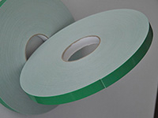
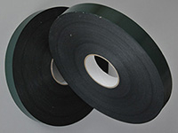
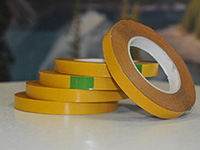
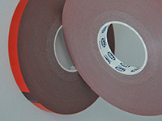

Специальные плёнки
Двухсторонние ленты
- Двусторонний вспененный скотч (Германия)
-

Двусторонний вспененный скотч Poli-mount 385 POLI-TAPE
Poli-mount 385 - клеевым слоем служит высококачественный полиакрилатный клей на основе растворителя, который обладает очень высокой силой сцепления с поверхностью различных материалов. Имеет высокую долговечность, стойкость к УФ-излучению, а также к воздействию различных пластификаторов и других ингредиентов, которые могут выпотевать на поверхность склеиваемых материалов.
Используется в тех случаях, когда необходима высокая сопротивляемость нагрузке на сдвиг: для крепления зеркал, профилей, крючков в мебельной промышленности, монтажа оборудования внутри транспортных средств, приклеивания элементов дизайна и украшения интерьеров в рекламной и строительной индустрии, в приборостроении.
- Тех. характеристики:
- клей - акриловый
- основа - вспененный PE, белый
- Защита - зеленая PE пленка
- Адгезия - 4,2N/см +/- 10%
- Толщина - 1,0 мм+/-5%
- Температура применения - от -40°С до +80°С
- Длина рулона - 50м
Двусторонний вспенненный скотч Poli-mount 3905 POLI-TAPE
Poli-mount 3905 - применяется полиакрилатный клей на основе растворителя высокой клеящей силы. Из-за использования специального вспененного полиэтилена обладает долговечностью, повышенной стойкостью к УФ-излучению, к воздействию различных растворителей и химически активных сред, широким диапазоном рабочих температур.
Благодаря повышенной эластичности вспененной полиэтиленовой основы возможно соединение материалов с различными коэффициентами линейного термического расширения, а также материалов, имеющих неровные и структурированные поверхности. Используется для долговременного приклеивания декоративных и функциональных профилей, планок, молдингов, логотипов, эмблем и объемных форм, а также для монтажа декоративных панелей и формованных изделий в автомобилестроении.
- Тех. характеристики:
- клей - акриловый
- Основа: вспененный PE,черный
- Защита - зеленая PE пленка
- Адгезия: 4,1N/cm +/- 10%
- Толщина: 1,0 мм+/-5%
- Температура: от -40°С до +80°С
- Длина рулона - 50м
Наименование Размер мм. Poli-mount 385 (белая) 19х50 Poli-mount 3905 (черная) 30х50 - Двусторонний скотч тонкий (Германия)
-
Двухсторонние клеящие ленты, используемые в рекламной и строительной индустрии, в настоящее время используются настолько широко, что практически вытесняют другие виды крепления материалов и различных деталей интерьера и внешнего декора. Двухсторонние клеящие ленты применяются при сборке рекламных конструкций и лайтбоксов, в том числе при ответственном монтаже всевозможных электронных блоков и программаторов. При креплении хрупких и труднообрабатываемых деталей интерьера, таких как стекла и зеркала, использование двухсторонних клейких лент позволяет улучшить внешний вид и функциональные свойства изделия и вместе с тем существенно упрощает технологию производства, и повышает производительность работ. Тонкие двухсторонние ленты и ленты на вспененной основе используются для крепления различных декоративных элементов, раскладок, защитных коробов и молдингов. На рынке материалов для рекламной и строительной индустрии нишу недорогих и в то же время высококачественных клеящих лент одно из ведущих мест занимает известная фирма - производитель самоклеящихся пленочных материалов POLI-TAPE (Германия) и MacTac (Бельгия)
Двусторонний скотч Poli-fix 330 POLI-TAPE
Poli-fix 330 - в качестве клеевого слоя используется прозрачный синтетический каучук, который обладает высокой силой приклеивания даже к неполярным пластикам, таким как полиэтилен и пропилен. Благодаря стабильности размеров используется для вырубки различных элементов из скотча, монтажа легких деталей, дисплеев, образцов товаров, шильдов, экранов, реек, профилей, для маркировки изделий, склеивания вспененных материалов, бумаги, картона, пластиков.
- Тех. характеристики:
- Клей - синтетический каучук
- Основа - прозрачная PP пленка
- Защита - желтая силиконовая бумага (95г/м2)
- Адгезия - 10N/см +/- 10%
- Толщина - 0,10 мм+/-5%
- Температура применения - от -20оС до +70оС
- Длина рулона - 50м
Наименование Размер мм. Poli-fix 15х5000 Uzlex TR 326 6х5000 Uzlex TR 330 6х5000 - Двусторонний акриловый скотч (Бельгия)
-
Лента из акрилового пеноматериала с клеевым слоем с двух сторон. Разработана для монтажа внешних деталей кузова автомобиля, например, боковых декоративных и противоударных молдингов, а также эмблем. Благодаря уникальной природе акрилового пеноматериала лента обладает отличными прочностными и адгезионными характеристиками, а по прочности склеивания превосходит существующие неопреновые ленты. Рекомендуется наносить на обезжиренную поверхность.
- Обеспечивает прочное соединение.
- Используется предприятиями автомобильной промышленности.
- Совместима с заводским и ремонтным лакокрасочным покрытием.
- Легко принимает форму поверхности.
- Описание:
- Лента из вспененного акрилового клея изготавливается с использованием уникальной технологии, позволяющие получить гомогенную структуру акрилового адгезива с высокими механическими характеристиками и устойчивостью к внешней среде.
- Данный продукт может использоваться для различный целей, как на внутренних, так и на внешних поверхностях.
- Уникальная вязкоупругая природа акрилового вспененного материала обеспечивает высокую силу адгезии, сочетающуюся с отличной ударной прочностью и устойчивостью к воздействию дорожной среды.
- Лента из акрилового материала позволяет компенсировать несовпадение поверхностей склеиваемых деталей.
- Начальная адгезия усиливается со временем, достигая максимума через 72 часа при температуре 25 градусов Цельсия и обеспечивает долговременную надежную связь между соединяемыми с ее помощью деталями.
- Лента характеризуется высокой адгезией к поверхностям из окрашенной стали и различным пластикам, используемым в автомобилях. При испытаниях на отрыв и сдвиг, материал обладает высокой прочностью.Типовым примером применения ленты является крепление деталей экстерьера и интерьера автомобиля, например молдингов, деталей из пластика (накладки стоек кузова, панели приборов, декоративные панели экстерьера т. д.)
- Двусторонняя клейкая акриловая лента из вспененного акрилового клея имеет специальную рецептуру,соответствующую требованиям очень широкого спектра.
Двухсторонняя лента Acrylic HCA 32002 “OPTION TAPE”( Бельгия)
Acrylic HCA 32002 - Двухсторонняя лента на основе серого акрила специально разработана для автомобильной промышленности. Благодаря свойствам клея обладает отличными свойствами приклеивания при использовании с автомобильным пластиком и крашеной сталью. Также используется в производстве дорожных знаков, при монтаже тяжелых объектов, для автотюнинга, в строительной промышленности. Высокая степень адгезии требуется при склейки металла, стекла, пластика, Acrylic HCA 32002 заменяет операцию сварки этих материалов как для внутреннего так и внешнего применения.
- Тех. характеристики:
- клей - акриловый
- основа - акрил, серый (820кг/м3)
- Защита - красная LDPE пленка
- Адгезия - 16N/см+/- 10%
- Толщина - 0,80 мм+/-5%
- Температура применения - от -30°С до +150°С
- Длина рулона - 33м
Двухсторонняя лента Acrylic HCA 32121 “OPTION TAPE”( Бельгия)

Acrylic HCA 32121 - Двухсторонняя лента на прозрачной акриловой основе с высокой стойкостью к УФ, старению и воздействию атмосферы. Acrylic HCA 32121 следует использовать для материалов, когда требуется прозрачная линия склейки: склеивание стекла, прозрачных пластиков, уплотнение окон при верхнем освещении, приклеивание ручек к раздвижным стеклянным дверям, крепление табличек с задней подсветкой. Также подходит для склеивания металлов. Хороший герметик и клеющий материал.
- Тех. характеристики:
- клей - акриловый
- основа - акрил, прозрачный (1000кг/м3)
- Защита - красная LDPE пленка
- Адгезия - 12N/см+/- 10%
- Толщина - 1,0 мм+/-5%
- Температура применения - от -30°С до +180°С
- Длина рулона - 33м
Наименование Размер мм. Acrylic HCA clear 12x330 Acrylic HCA clear 19x330 Acrylic HCA clear 25x330 Acrylic HCA grey 19x330